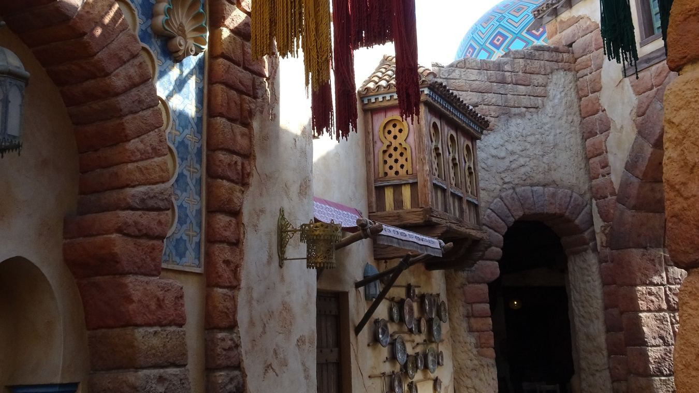

Sindbad’s Storybook Voyage
— 優しき冒険者の船出と、心のコンパスアラビアンコーストの黄金のドームから船を出すと、シンドバッドと子トラのチャンドゥが待っています。いまは仲間の歌声が響くこの海で、かつては巨人が船乗りを脅かしていました。同じ海の冒険がどう姿を変えたのか、その航路は『千夜一夜物語』までさかのぼります。

I. Prologue
アラビアンコーストの広場で見上げると、大きな黄金のドームが屋根の上に浮かんでいます。その下にあるのが「シンドバッド・ストーリーブック・ヴォヤッジ」の船着き場です。
船で訪ねる島々には、シンドバッドと子トラのチャンドゥが出会う仲間たちが暮らしています。心のコンパスを頼りに探す宝は、黄金をしのぐ友情と勇気。千年以上も語り継がれてきた船乗りの旅を、イマジニアたちは、この水路でもう一度描き直しました。
II. The Original Sindbad
シンドバッドは、アラビア語圏で長く語り継がれてきた説話集『千夜一夜物語（アルフ・ライラ・ワ・ライラ）』に登場する、バグダッドの商人であり船乗りです。
彼は財宝や商いの機会を求めて七度の航海に出かけました。その旅では幾度も命の危険にさらされますが、知恵や運によって危機を乗り越え、富を持ち帰ります。
しかし、無事に故郷へ戻っても、再び海の向こうの世界へと旅立ちます。現在のアラビアンコーストで出会うシンドバッドとは、旅に出る理由や、島々で出会う相手との関係が大きく異なっています。
原典に登場する7つの航海と怪物たち
七つの航海では、シンドバッドはさまざまな怪物や不思議な生き物に出会います。
仲間を食べてしまう巨人、空を舞う巨大な鳥ロック、背中に乗ったまま離れようとしない海の老人。いずれも、船乗りが故郷へ帰るまでに乗り越えなければならなかった試練です。
シンドバッドは知恵を絞り、時には運にも助けられながら、こうした危機を切り抜けていきます。
📜 『千夜一夜物語』に伝わる七つの航海
第1航海：島と見まがう巨大な魚の背で火をたき、魚が潜ると海に投げ出される。流れ着いた島で王に出会う。
第2航海：島に取り残され、ロックの卵を見つける。親鳥の足につかまって島を離れ、宝石の谷からは肉を運ぶ鳥を利用して脱出する。
第3航海：仲間を食べる巨人に遭遇する。一つ目の巨人として語られる版もあり、焼いた串でその目をつぶして、いかだで逃れる。
第4航海：島で結婚するが、妻が亡くなると、島の習わしで生きたまま墓に入れられる。
第5航海：仲間がロックの卵を割って雛を殺し、親鳥に船を沈められる。流れ着いた先で海の老人に遭遇する。
第6航海：難破し、陸へ流れ着く。いかだで地下の川をくぐり抜け、王国にたどり着く。
第7航海：象に連れられて象の墓場を見つけ、象牙を得る話が伝わる。
古い航海譚では、怪物たちとの出会いは命を懸けた試練でした。シンドバッドは相手を出し抜いたり、その場から逃れたりすることで生き延びます。
一方、現在の航海では、かつて恐ろしい存在だった生き物たちが、シンドバッドと歌を交わし、旅を助ける仲間となっています。
二つの物語を比べると、同じ海の冒険でも、船乗りが旅の中で見つける宝物が異なることに気がつきます。
III. Sindbad’s Seven Voyages
2001年の開園当初、船着き場に掲げられていた名は「シンドバッド・セブンヴォヤッジ（七つの航海）」でした。巨人の宝を奪い、闇を抜けていく冒険には、財宝に引かれて海へ乗り出した原典の船乗りの面影が残っていました。
開園当初の航海には、古い航海譚の恐ろしさが色濃く残されていました。巨人は船乗りを脅かし、嵐の海には不気味な歌声が響きます。
現在とは異なる、危険と財宝に満ちた冒険の世界が描かれていたのです。
開園当初の航海で出会うもの
・巨人は目を光らせ、船乗りたちを食べようとしました。
・嵐の海で不気味に歌う人魚たちは、船乗りを惑わす存在でした。
・当時の航海には、まだチャンドゥの姿はありませんでした。
・暗がりを進む船には、重い響きの音楽がついてきました。
2006年に旧版が終了し、翌年に新しい航海が始まりました。巨人も島々も残しながら、そこで船乗りを待つものが変わっていきます。
IV. Original vs. Disney
イマジニアたちは、古い航海譚に登場する島々や生き物たちの姿を残しながら、シンドバッドの旅の物語を描き直しました。
巨人もロックも、象も、再び船乗りを迎えることになります。しかし、今度の航海で彼らがシンドバッドに与えるのは、恐怖や危険ばかりではありませんでした。
| 登場する要素 | 原典（千夜一夜物語） | ディズニー版（現行） |
|---|---|---|
| シンドバッドの動機 | 財宝や富を求めて航海する。危機に遭うと、知恵や運を頼りに生き延びる。 | 「本当の宝物」＝友情や勇気を求める純粋な冒険心。 |
| 巨人 | 第3航海で仲間を食べる怪物。シンドバッドたちは目を焼いて逃れる。 | シンドバッドと楽器で交流し、友達になる穏やかな存在へ。 |
| ロック（巨鳥） | 第5航海で雛を殺され、船乗りの命を脅かす巨鳥。 | シンドバッドが雛を助け、母鳥の羽を受け取る。 |
| 人魚 | （七つの航海に直接対応する場面なし） | 嵐の海でシンドバッドを歌で迎える。 |
| 象 | 第7航海で墓場に連れていかれる。象牙＝財宝の源。 | シンドバッドの旅を助ける仲間。 |
| 猿の島 | （直接の対応エピソードなし） | サルとバナナを分け合う交流の場面。 |
| 旅の結末 | 財宝を得てバグダッドへ帰還。七度の航海を経て、その経験を語る。 | 「心のコンパス」＝信じる心こそが真の宝だと悟って帰還。 |
船乗りと島々の生き物たち
巨人もロックも象も、古い航海譚に登場していた生き物たちです。
イマジニアたちは彼らの姿を残しながら、シンドバッドを脅かす存在ではなく、旅の中で出会う仲間として描き直しました。
かつては知恵を使って怪物から逃れていた船乗りが、今度は相手に手を差し伸べ、歌や楽器を通して心を通わせるようになったのです。
ボートライドの各シーン順に読み解く
現行アトラクションに乗車しながら、各シーンの原典との対応を意識すると、また別の味わいが生まれます。
- Scene 01 シンドバッドはチャンドゥを連れて船出します。財宝を求めて海へ向かった古い航海譚とは異なり、この旅では心のコンパスを頼りに、本当の宝物を探します。
- Scene 02 嵐の海には、人魚たちの歌声が響いています。船乗りを惑わす不気味な存在として描かれていた旧版とは異なり、現在の航海ではシンドバッドを迎える歌声が聞こえてきます。
- Scene 03 巨大な鳥ロックのいる島では、チャンドゥが小さな雛たちと出会います。古い航海譚の第2・第5航海に姿を現す巨鳥も、この旅では雛を助けたシンドバッドに羽を贈ります。
- Scene 04 シンドバッドが出会う巨人は、古い航海譚の第3航海で船乗りたちを恐怖に陥れた存在でした。しかし、今度の航海でシンドバッドは牢に閉じ込められた巨人を助け、二人は楽器の音色を通して心を通わせるようになります。
- Scene 05 古い航海譚の第7航海で象牙という財宝につながっていた象たちは、現在の航海ではシンドバッドの旅を助ける仲間となっています。
- Scene 06 長い航海を終えたシンドバッドは、宝石などを船に積んで故郷のバズラへ戻ります。旅の中で見つけた本当の宝物は、島々で出会った仲間たちと、心のコンパスが示したものでした。
V. Alan Menken's Magic
この航海のために曲を書いたのは、『アラジン』や『美女と野獣』の音楽を手がけたアラン・メンケンです。イマジニアたちが直接依頼し、島々を結ぶ新しい旋律が生まれました。
船出のときから聞こえてくるのが「コンパス・オブ・ユア・ハート」です。歌うのは、劇団四季の『ライオンキング』で初代シンバを演じた坂元健児氏。心のコンパスを信じて進む船乗りの声が、旅の行く先々で、そこで出会った仲間の声と重なります。
「コンパス・オブ・ユア・ハート」には、アラビアの音楽を思わせる弦楽器の音色や打楽器のリズムが取り入れられています。
メンケンは、アラビアンコーストの海を旅するシンドバッドに、友情や勇気を歌う新しい曲を与えました。
🎵 「コンパス・オブ・ユア・ハート」の構造
船出の場面では明るく軽快に、嵐の海では不安を感じさせる響きに。そして旅の終わりには、シンドバッドと仲間たちの歌声が重なります。
同じ旋律が、船乗りの出会いや冒険に合わせて少しずつ姿を変えていくのです。
VI. Chandu
新しい航海から乗り込んだ相棒が、子トラのチャンドゥです。小さな体で船乗りのあとを追うその姿に目を向けると、かつて恐ろしかった島々にも、思わず頬がゆるむひとときがあります。
『千夜一夜物語』のシンドバッドは動物の相棒を連れていません。チャンドゥは、この港の航海のために生まれました。勇気や強さを思わせるトラが、ここでは船に乗れるほど小さな旅の道連れです。
チャンドゥはシンドバッドの行く先々で、おもちゃ箱に隠れたり、財宝の山から顔をのぞかせたりしています。バナナをくわえた姿も見られます。
小さなチャンドゥは、船乗りのそばで島々の生き物たちと出会いながら、一緒に旅を続けます。かつて恐ろしい怪物たちが待っていた島にも、今ではシンドバッドと仲間たちの歌声が響いています。
VII. The Sultan's Wish — アラビアンコーストに込められた願い
航海を終えて黄金のドームの外へ戻ると、そこはサルタンの願いから生まれた港です。
ランプの魔人ジーニーが自由になり、アラジンとジャスミンは結ばれました。ジャスミンの父であるサルタン国王は、臣民みんなにアラビアンナイトの魔法や楽しさを味わってほしいと願いました。その願いを受けて、ジーニーは魔法でアラビアンコーストの宮殿と港町をつくりました。
サルタンが人々のために願った港へ、船乗りは仲間を得て帰ってきます。
長い年月をかけて語り継がれてきたシンドバッドの航海は、ここアラビアンコーストで新しい物語となりました。
かつて財宝を求めて海を渡った船乗りは、今では心のコンパスを頼りに、島々で出会う仲間たちと歌を交わしています。